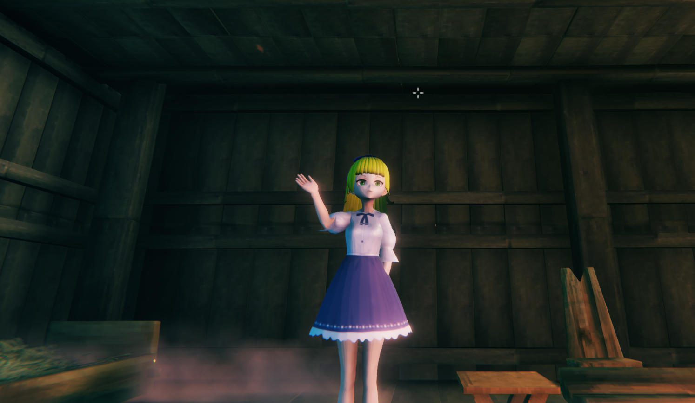

thanks @ArgamaWitch !
① BepInExPackの配布ページ(https://valheim.thunderstore.io/package/denikson/BepInExPack_Valheim/)から「Manual Download」をクリックし「denikson-BepInExPack_Valheim-x.x.xxx.zip」をダウンロードしてください。
②「denikson-BepInExPack_Valheim-x.x.xxx.zip.zip」を解凍し、「BepInExPack_Valheim」の中身をすべて「Valheim」フォルダ内に入れてください。
Valheimフォルダの中が以下のようになれば大丈夫のはずです。
※Valheimフォルダは以下の手順で確認できます。
以上でBepInExPackの導入は完了です。
① ValheimVRMの配布ページ(https://github.com/yoship1639/ValheimVRM/releases)から「ValheimVRM_x.x.x.zip」をダウンロードしてください。（x.x.xは最新のバージョンをダウンロードしてください）
② 「ValheimVRM_x.x.x.zip」を解凍すると以下が入っていることを確認してください。READMEからこのページに移動できます
③ それぞれのファイルを以下に配置してください。
以上でValheimVRMの導入は完了です。
① 「Valheim」フォルダ内に「ValheimVRM」フォルダを作成してください。
② 「ValheimVRM」フォルダ内にプレイヤーモデルと差し替えたいVRMファイルを「プレイヤー名.vrm」で入れてください。(プレイヤー名はヴァルヘイム内のプレイヤー名に置き換えてください)
③ 「ValheimVRM」フォルダ内に入れた「settings_player.txt」を「settings_プレイヤー名.txt」にリネームしてください。(プレイヤー名はヴァルヘイム内のプレイヤー名に置き換えてください)
④ settings_プレイヤー名.txt内を編集することで本MODの各種調整ができます。
以上で準備完了です。Valheimを起動しプレイヤーモデルがVRMモデルに差し変わっていることを確認出来たら成功です。お疲れ様でした。
差し変わっていなかった場合。今回の手順をもう一度見直してやり直してください。
ValheimVRMをプレイする際は以下に注意してください。
① ValheimVRMの配布ページ(https://github.com/yoship1639/ValheimVRM/releases)から「ValheimVRM_x.x.x.zip」をダウンロードしてください。（x.x.xは最新のバージョンをダウンロードしてください）
②「Valheim/BepInEx/plugins」内の「ValheimVRM.dll」を新しいやつに置き換えてください。
③「valheim_Data_Managedに入れるファイル」に新しく追加されたdllがある場合は、それを「Valheim/valheim_Data/Managed」フォルダ内に入れてください
以上でバージョンアップは完了です。
① 「Valheim」フォルダにある「ValheimVRM」フォルダを削除してください。
② 「Valheim/BepInEx/plugins」フォルダにある「ValheimVRM.dll」「ValheimVRM.shaders」を削除してください。
③ 「Valheim/valheim_Data/Managed」フォルダにある以下のファイルを削除してください。
以上で本MODのアンインストールは完了です。